Garden transformationsFull layouts with paving, lawn and outdoor features
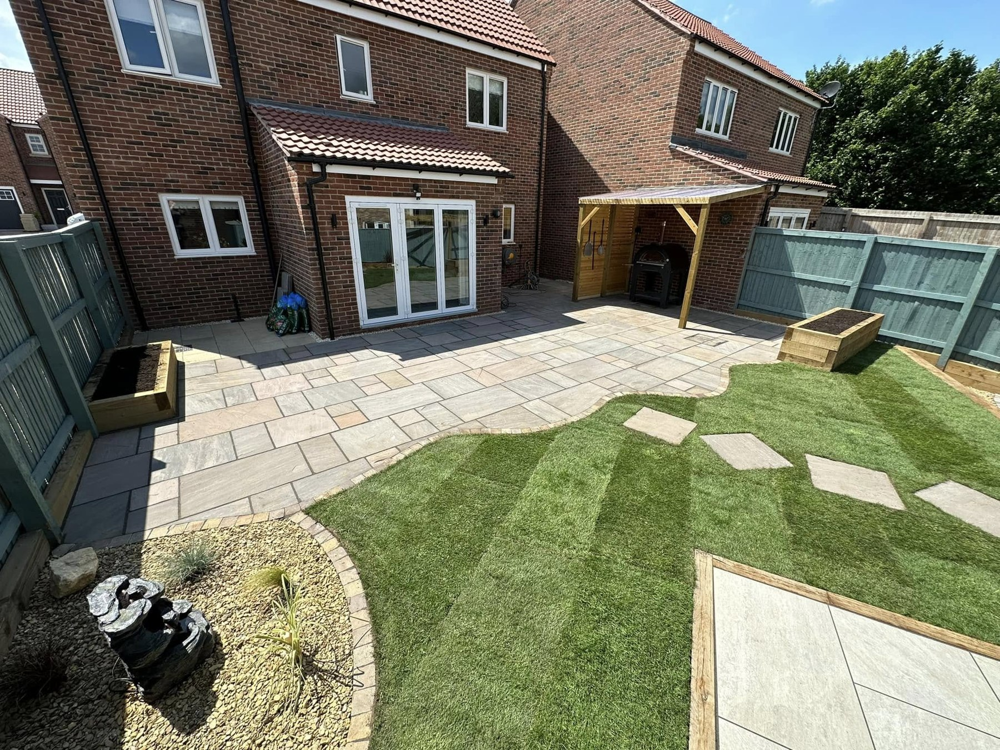
Patios & pavingPractical seating areas with carefully finished edges
Pergolas & structuresDefined places to sit and enjoy the garden
Lawns & finishingClean lawn areas, paths and boundaries
LANDSCAPING IN THIRSK
Every part of the garden working together.
James Dawson Landscapes creates usable gardens with a clear sense of layout. The supplied projects bring together crisp patios, healthy-looking lawns, timber pergolas and defined garden edges.
Request a quote →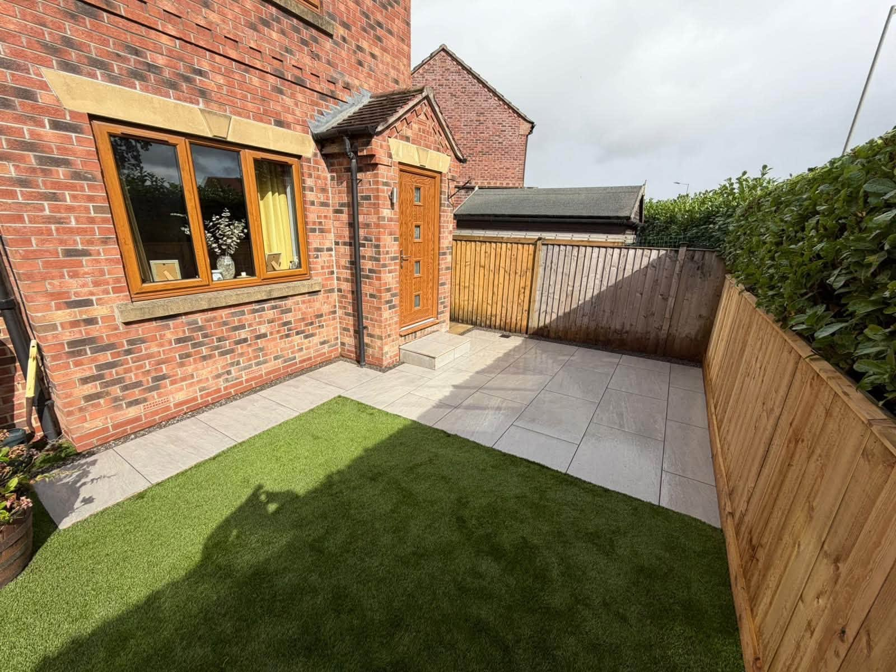
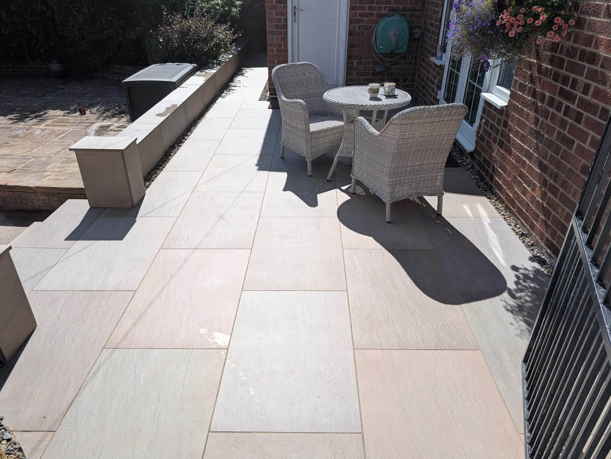
PATIOS & OUTDOOR LIVING
A place for every part of the day.
A good patio opens up the garden for everyday use. Add a pergola, seating and lawn areas and it becomes an inviting extension of the home.
Discuss your project →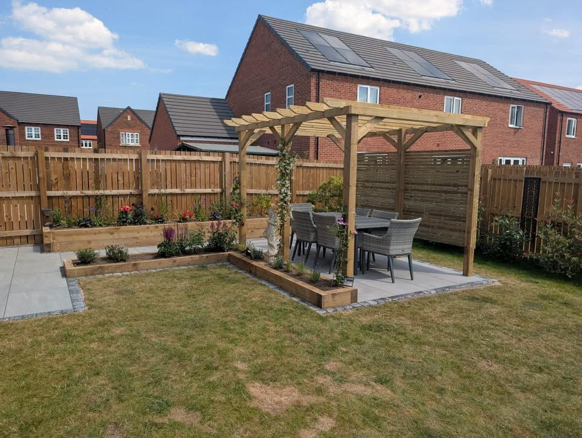
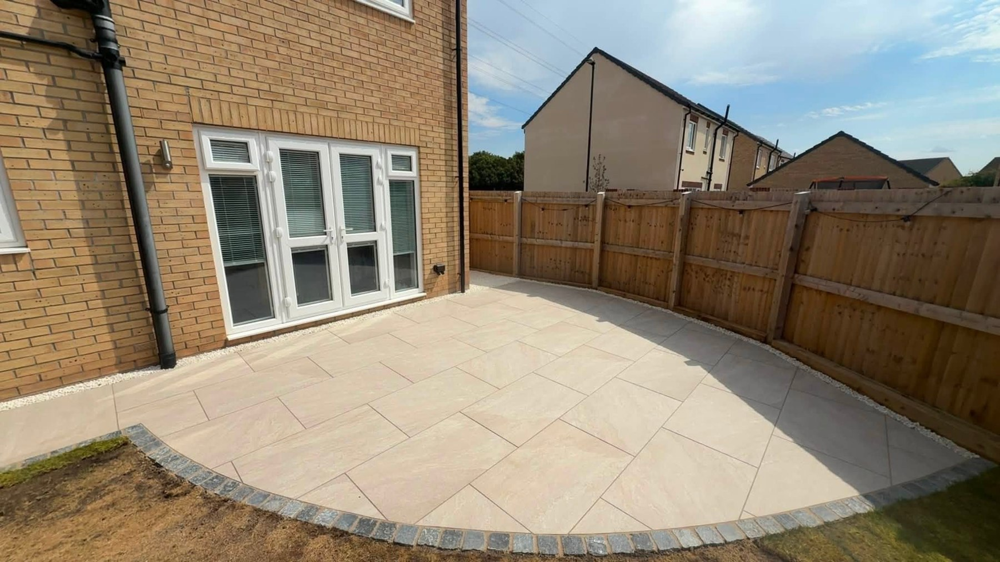
RECENT WORK
The finished work tells the story.
Recent supplied James Dawson Landscapes project photos.
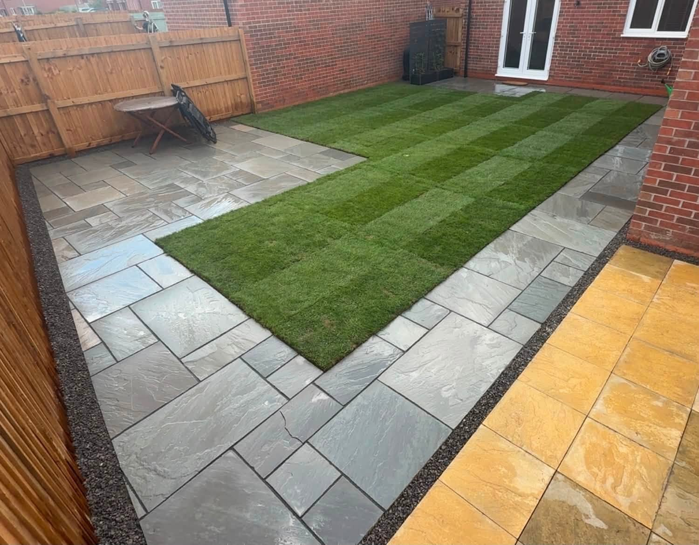
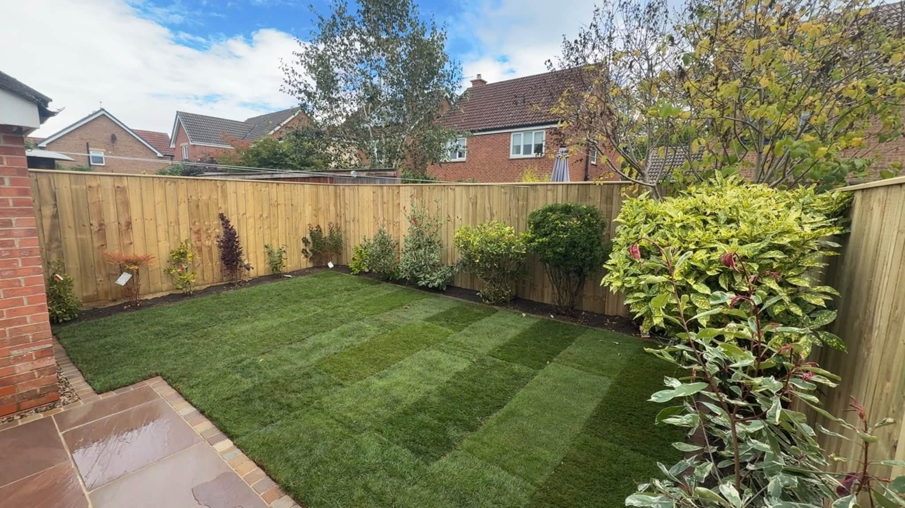
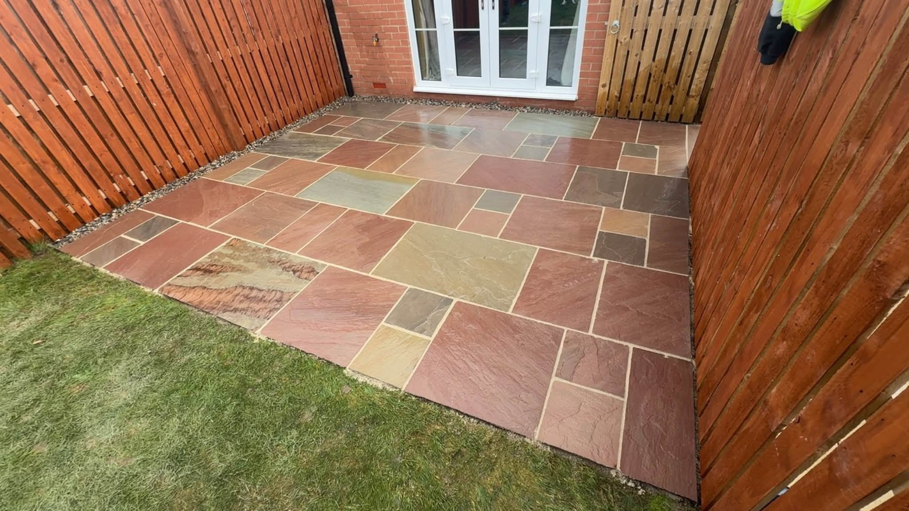
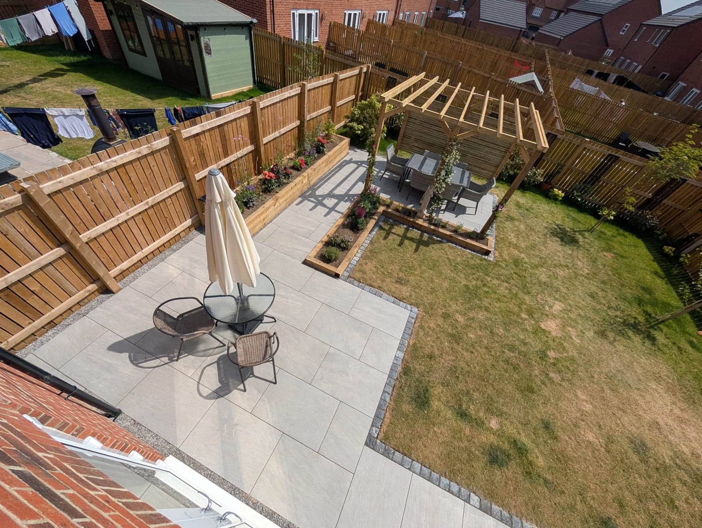
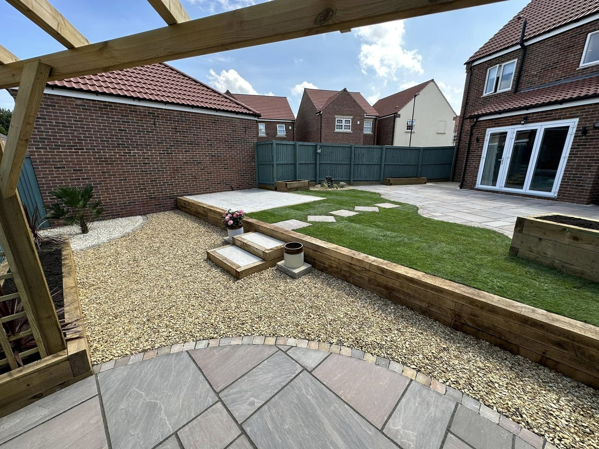
FROM PREPARATION TO FINISH
The details matter at every stage.
Across the portfolio, ground preparation and careful paving come together to create practical finished areas. These images show stages from separate projects.
Plan your transformation →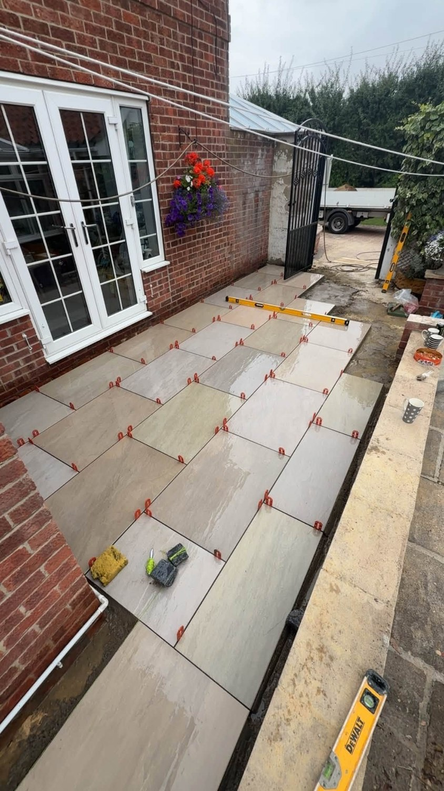
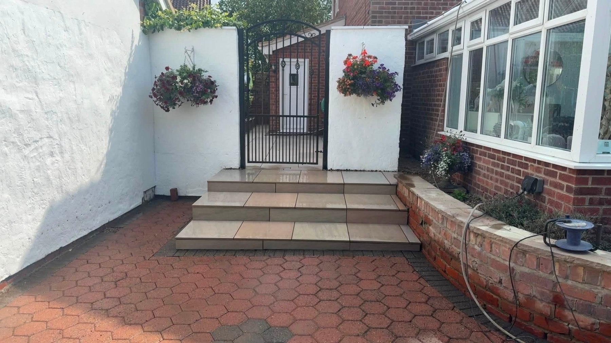
THIRSK BASED
Outdoor spaces made with care.
James Dawson Landscapes is based in Thirsk and works on complete landscaping projects. The supplied portfolio shows patios, paving, garden structures, lawns and defined outdoor areas; the business states it was established in 2021.
01
Considered layout
Areas planned around how the garden will be used.
02
Strong hard landscaping
Paving and structures that shape the space.
03
Complete finish
Lawns, borders and details that complete the project.
REQUEST A QUOTE
Tell James about your garden.
Complete the form and it will open WhatsApp with your project details ready to send. This is a quote request, not a confirmed booking.
JAMES DAWSON LANDSCAPES
Ready to make more of your garden?
Thirsk & surrounding areas · jamesdawsonlandscapes@hotmail.com